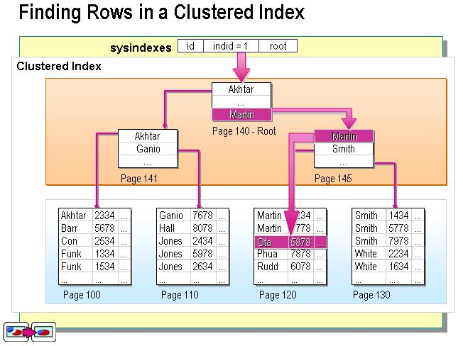
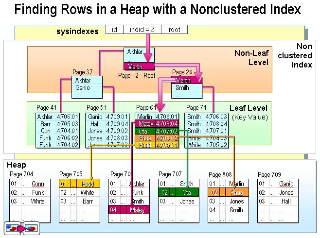

一种索引，该索引中键值对的顺序决定了表中相应行的物理顺序。
聚集索引确定表中数据的物理顺序。聚集索引类似电话簿，后者按姓氏排列顺序。由于聚集索引规定数据在表中的物理存储顺序，因此一个表只能包含一个聚集索引。但该索引可以包含多个列(组合索引)，就像电话簿按姓氏和名字进行组合一样。
聚集索引对那些经常要搜索范围值的列特别有效。使用聚集索引找到包含第一个值的行后，便可以确保后续索引值的行的物理相邻。例如，如果应用程序执行的一个查询经常检索某一日期范围内的纪录，则使用聚集可以迅速的找到包含开始日期的行，然后检索表中所有相邻的行，直到到达结束日期。这样有助于提高此类查询的性能。同样，如果从表中检索的数据进行排序时要用到某一列，则可以将该表在该列上聚集(物理顺序)，避免每次查询该列都进行排序，从而节省成本。
但索引值唯一时，使用聚集索引查找特定的行也很有效率。例如：使用唯一雇员ID列emp_id查找特定雇员的最快速方法，是在emp_id列上创建聚集索引或者PRIMARY KEY约束。
一种索引，该索引中索引的逻辑顺序与磁盘上行的物理存储顺序不同。
索引是通过二叉树的数据结构来描述的，我们可以这么理解聚簇索引：索引的叶节点就是数据节点。而非聚簇索引的叶节点仍然是索引节点，只不过有一个指针指向对应的数据块。如下图：


实际上，您可以把索引理解为一种特殊的目录。微软的SQL SERVER提供了两种索引：聚集索引(clustered index，也称聚类索引，簇集索引)和非聚集索引(nonclustered index，也称非聚类索引，非簇集索引)。下面，我们举例来说明一下聚集索引和非聚集索引的区别：
其实，我们的汉语字典的正文本身就是一种聚集索引。比如，我们要查"安"字，就会很自然的翻开字典的前几页，因为"安"的拼音是"an"，而按照拼音排序汉字的字典是以英文字母"a"开头并以"z"结尾的，那么"安"字自然的就排在字典的前部。如果您翻完了所有以"a"开头的部分仍然找不到这个字，那么就说明您的字典中没有这个字；同样的，如果查"张"字，那您也会将您的字典翻到最后部分，因为"张"的拼音是"zhang"。也就说，字典的正文部分本身就是一个目录，您不需要再去查其他目录找到您需要找的内容，我们把这种正文内容本身就是一种按照一定规则排序的目录称为"聚集索引"。
如果您认识某个字，您可以快速的从字典中查到某个字。但您也可能会遇到您不认识的字，不认识它的发音，这时候，您就不能按照刚才的方法找到您要找的字，而需要根据"偏旁部首"去找到您要找的字，然后根据字后的页面直接翻到某页来找到您要找的字。但您结合"部首目录"和"检字表"而查到的字的排序并不是真正的正文的排序。比如您查"张"字的页码是627页，检字表中"张"的上面是"弛"，但页码确实63页，"张"的下面是"弩"，页面是390页。很显然，这些字并不是真正的位于"张"的上下方，现在您看到的连续的"驰、张、弩"三字实际上就是它们在非聚集索引中的排序，是字典正文中的字在非聚集索引中的映射。我们可以通过这种方式找到您说需要的字，但它需要两个过程，先找到目录中的结果，然后再翻到您所需要的页码。我们把这种目录纯粹是目录，正文纯粹是正文的排序方式称为"非聚集索引"。
通过以上例子，我们可以理解到什么是"聚集索引"和"非聚集索引"。进一步引申一下，我们可以很容易的理解：每个表只能有一个聚集索引，因为目录只能按照一种方式进行排序。
下表总结了何时使用聚集索引或非聚集索引(很重要)：
| 动作描述 | 使用聚集索引 | 使用非聚集索引 |
|---|---|---|
| 列经常被分组排序 | 应 | 应 |
| 返回某范围内的数据 | 应 | 不应 |
| 一个或极少不同值 | 不应 | 不应 |
| 小数目的不同值 | 应 | 不应 |
| 大数目的不同值 | 不应 | 应 |
| 频繁更新的列 | 不应 | 应 |
| 外键列 | 应 | 应 |
| 主键列 | 应 | 应 |
| 频繁修改索引列 | 不应 | 应 |
实际上，我们可以通过前面聚集索引和非聚集索引定义的例子来理解上表。如：返回某范围内的数据一项。比如您的某个表有一个时间列，恰好您把聚集索引建立在了该列，这时您查询2004年1月1日至2004年10月1日之间的全部数据时，这个速度就将是很快的，因为您的这本字典的正文是按时间顺序排序的，聚类索引只需要找到要检索的所有数据中的开头和结尾数据即可；而不像非聚集索引，必须先查到目录中查到每一项数据对应的页码，然后再根据页码查到具体内容。
理论的目的是应用。虽然刚才我们列出了何时使用聚集索引和非聚集索引，但在实际中以上情况却很容易被人忽视或不能根据实际情况进行综合分析。下面我们将根据在实践中遇到的实际情况来谈一下索引使用的误区，以便大家掌握索引建立的方法。
这种想法笔者认为是极端错误的，是对聚集索引的一种极端浪费。虽然SQL SERVER默认是在主键上建立聚集索引的。
通常，我们会在每个表都建立一个ID列，以区分每条数据，并且这个ID列是自动增大的，步长一般为1。我们的这个办公自动化的实例中的列Gid就是如此。此时，如果我们将这个列设为主键，SQL SERVER会默认将此列设置为聚集索引。这样做有好处，就是可以让你的数据在数据库中按照ID进行物理排序，但笔者认为这样做意义不大。
显而易见，聚集索引的优势是很明显的，而每个表中只能有一个聚集索引的规则，这使得聚集索引变的更加珍贵。
从我们前面谈到的聚集索引的定义我们可以看出，使用聚集索引的最大好处就是可以根据查询要求，迅速缩小查询范围，避免全表扫描。在实际应用中，因为ID号是自动生成，我们并不知道每条记录的ID号，所以我们很难在实践中用ID号来进行查询。这就使让ID号这个主键作为聚集索引成为一种资源浪费。其次，让每个ID号都不同的字段作为聚集索引也不符合"大数目的不同值情况下不应简历聚合索引"规则；当然，这种情况只是针对用户经常修改记录内容，特别是索引项的时候会负作用，但对于查询速度并没有影响。
在办公自动化系统中，无论是系统首页显示的需要用户签收的文件、会议还是用户进行文件查询等任何情况下进行数据查询都离不开的字段是"日期"还用用户本身的"用户名"。
通常，办公自动化的首页会显示每个用户尚未签收的文件或会议。虽然外面的where语句可以仅仅限制当前用户尚未签收的情况，但如果您的系统已经建立了很长时间，并且访问量很大，那么，每次每个用户打开首页的时候都进行一次全表扫描，这样做的意义是不大的，绝大多数的用于1个月前的文件都已经浏览过了，这样做只能徒增数据库的开销而已。实际上，我们完全可以让用户打开系统首页时，数据库仅仅查询这个用户近3个月未阅览的文件，通过"日期"这个字段来限制表扫描，提高查询速度。如果您的办公自动化系统已经建立了2年，那么您的首页显示速度理论上将是原来是速度的8倍，甚至更快。
在这里之所以提到"理论上"三字，是因为如果您的聚集索引还是盲目的建立在ID这个主键上时，您对查询速度是没有这么高的，计时您在"日期"这个字段上建立的索引"非聚合索引"。下面我们就来看一下在1000万条数据量的情况下各种查询的速度表现(3个月内的数据为25万条)：
(1)仅在主键上建立聚集索引，并且不划分时间段：
用时：128470毫毛(即：128秒)
(2)在主键上建立索引，在fariqi上建立非聚集索引：
用时：53763毫秒(54秒)
(3)将聚合索引建立在日期(fariqi)列上：
用时：2423毫秒(2秒)
虽然每条语句提取出来的都是25W条数据，各种情况的差异确实巨大的，特别是将聚集索引建立在日期列上时的差距。事实上，如果您的数据库真的有1000W容量的话，把聚集索引建立在ID列上，就像以上的第1、2种情况，在网页上的表现就是超时，根本就无法显示。这也是我摒弃ID列作为聚集索引的一个最重要的因素。得出以上速度的方法是，在各个select语句前加上：
并在select语句后加：
事实上，我们可以发现上面的例子中，第2、3条语句完全相同，并且建立索引的字段也相同；不同的是前者在fariqi字段上建立的是非聚合索引，后者在此字段上建立的是聚合索引，但查询速度缺有着天壤之别。所以，并非是在任何字段上简单地建立索引就能提高查询速度。
从建表的语句中，我们可以看到这个有着1000万数据的表中fariqi字段有5003个不同纪录。在此字段上建立聚合索引是再合适不过了。在现实中，我们每天都会发几个文件，这几个文件的发文日期就相同，这完全符合建立聚集索引要求的："既不能绝大多数都相同，又不能只有极少数相同"的规则。由此看来，我们建立"适当"的聚合索引对于我们提高查询速度是非常重要的。
上面已经谈到：在进行数据查询时都离不开字段的是"日期"还有用户本身的"用户名"。既然这2个字段都是如此的重要，我们可以把他们合并起来，建立一个符合索引(compound index)
很多人认为只要把任何字段加紧聚集索引，就能提高查询速度，也有人感到迷惑：如果把符合的聚集索引字段分开查询，那么查询速度会减慢吗？带着这个问题，我们来看一下以下的查询速度(结果集都是25万条数据)：(日期列fariqi首先排在复合聚集索引的起始列，用户名neibuyonghu排在后列)：
查询速度：2513毫秒
查询速度：2516毫秒
查询速度：60280毫秒
从以上实验中，我们可以看到如果仅适用聚集索引的起始列作为查询条件和同时用到复合聚集索引的全部列的查询速度几乎一样的，设置比用上全部的复合聚集索引列还要略快(在查询结果集数目一样的情况下)；二如果仅用复合聚集索引的非起始列作为查询条件的话，这个索引是不起任何作用的。当然，语句1、2的查询速度一样是因为查询的条目数一样，如果复合索引的所有列都用上的话，而且查询结果少的话，这样就会形成"索引覆盖"，因而性能可以达到最优。同时，请记住：无论您是否经常使用聚合索引的其他列，但其前导列一定要是使用最频繁的列。
下面是实例语句：(都是提取25万条数据)
使用时间：3326毫秒
用时：4470毫秒
这里，聚集索引比不是聚集索引的主键速度快了近1/4。
用时：12936毫秒
用时：18843毫秒
这里，用聚集索引比用一般的主键做order by时，速度提高了3/10。事实上，如果数据量很小的话，用聚集索引所谓排序要比使用非聚集索引速度快的明显的多；二数据量如果很大的话，如10万以上，则二者的速度差别不明显。
用时：6343毫秒(提取100万条)
用时：3170毫秒(提取50万条)
用时：32326毫秒(和上句的结果一模一样，如果采集的数量一样，那么用大于号和等于号是一样的)
用时：3280毫秒
下面的例子共有100万条数据，2004年1月1日以后的数据有50万条，但是只有两个不同的日期，日期精确到日；之前有数据50万条，有5000个不同的日期，日期精确到秒。
用时：6390毫秒
用时：6453毫秒
"水可载舟，亦可覆舟"，索引也一样。索引有助于提高检索性能，但过多或不当的索引也会导致系统低效。因为用户在表中每加进一个索引，数据库就要做更多的工作。过多的索引甚至会导致索引碎片。所以说，我们要建立一个"适当"的索引体系，特别是聚集索引的创建，更应精益求精，以使您的数据库能得到高性能的发挥。
当然，在实践中，最为一个尽职的数据库管理员，您还要多测试一些方案，找出哪种方案效率最高、最为有效。